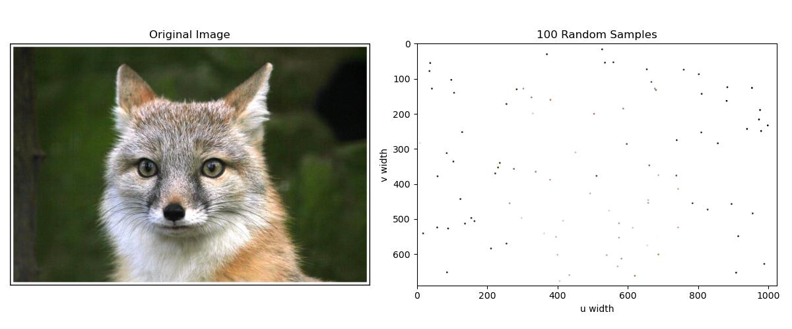
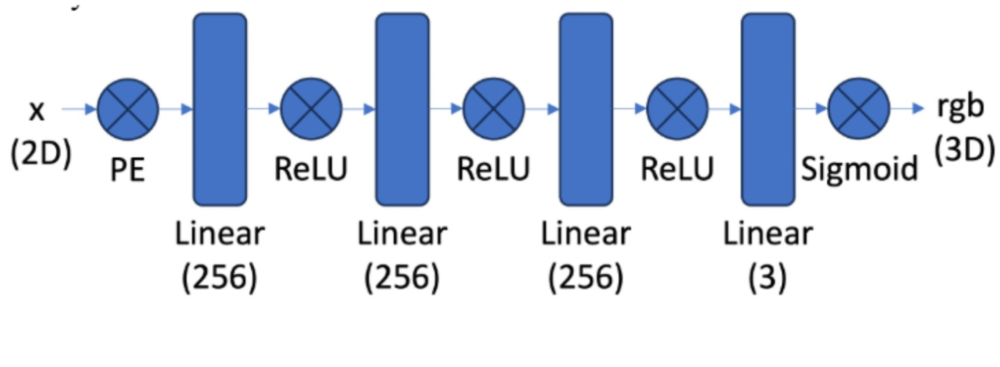
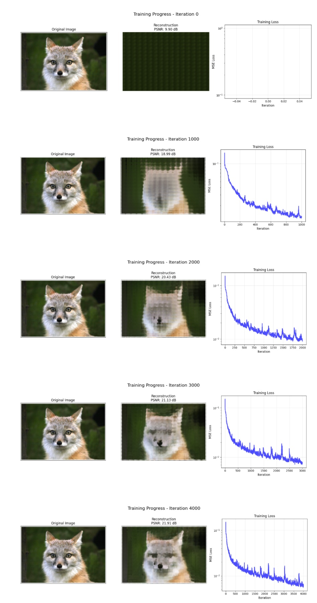
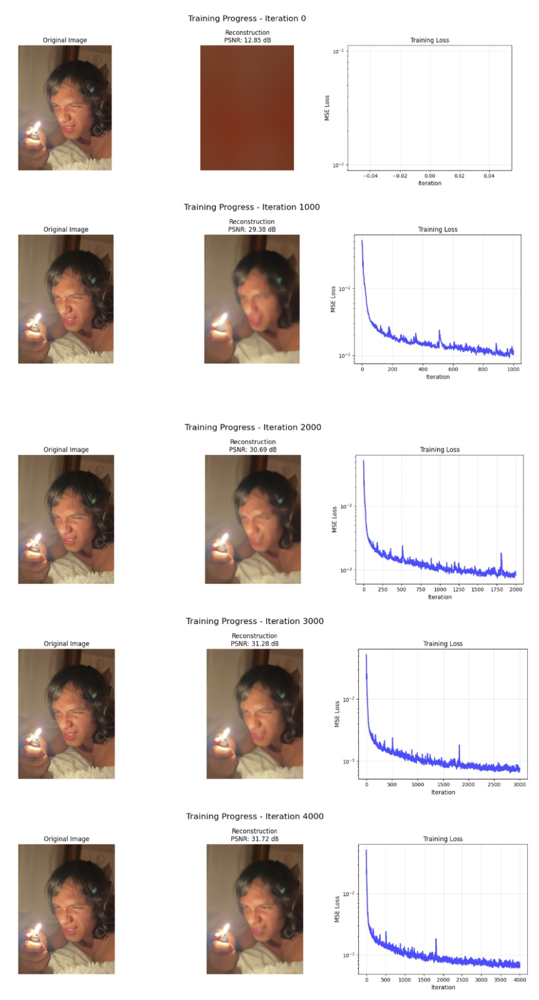
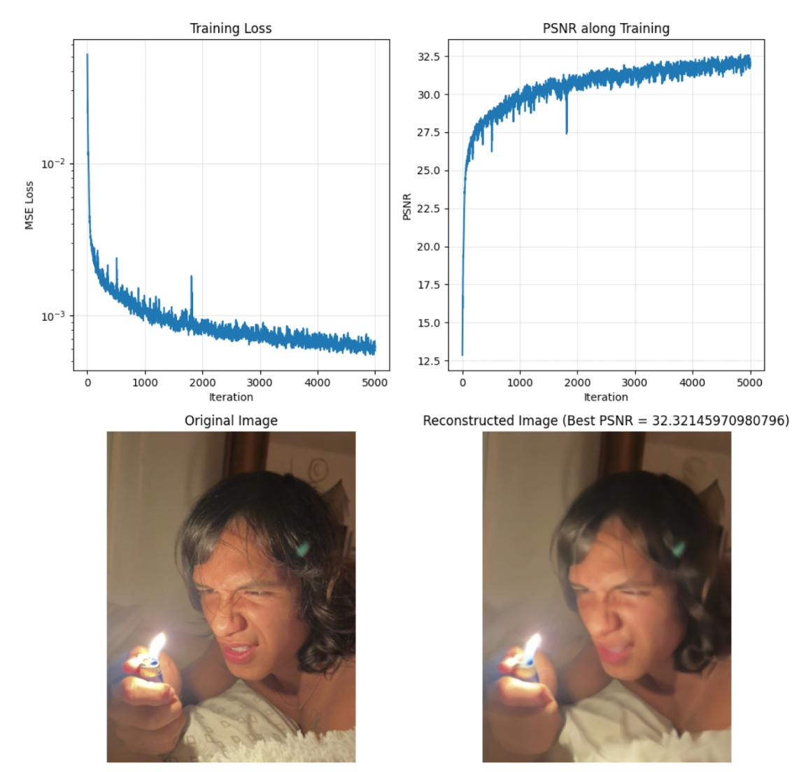
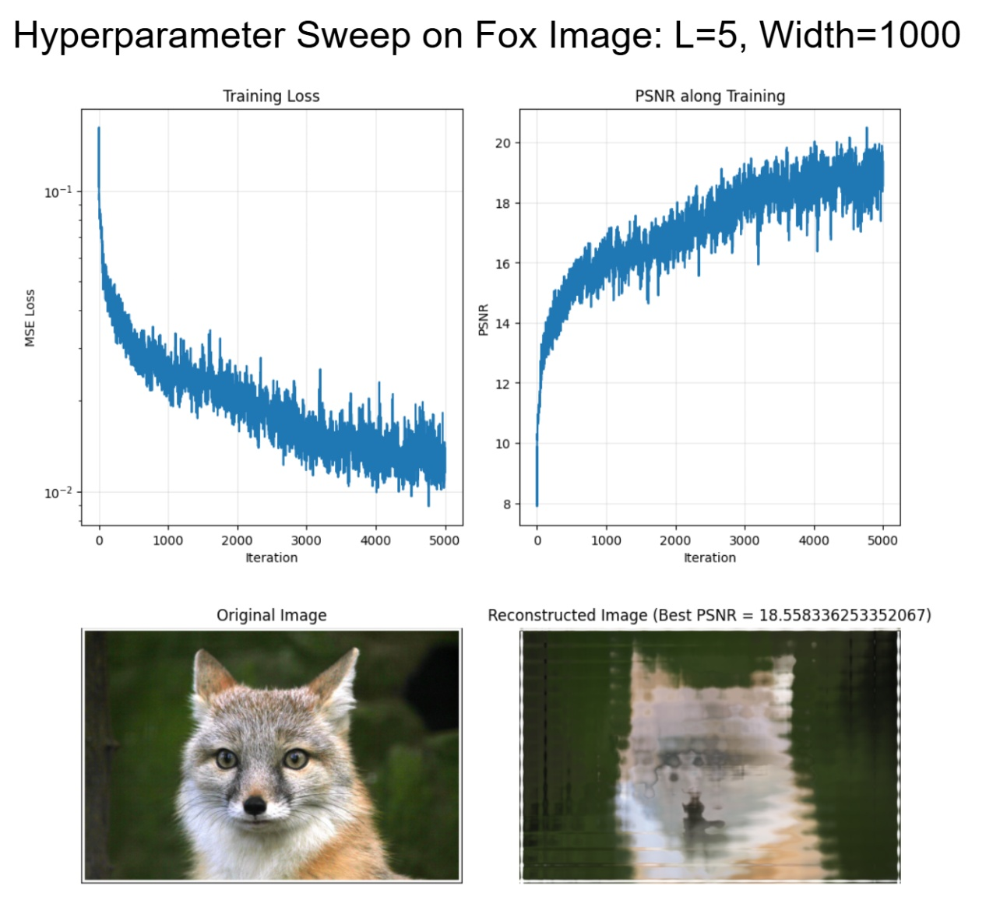
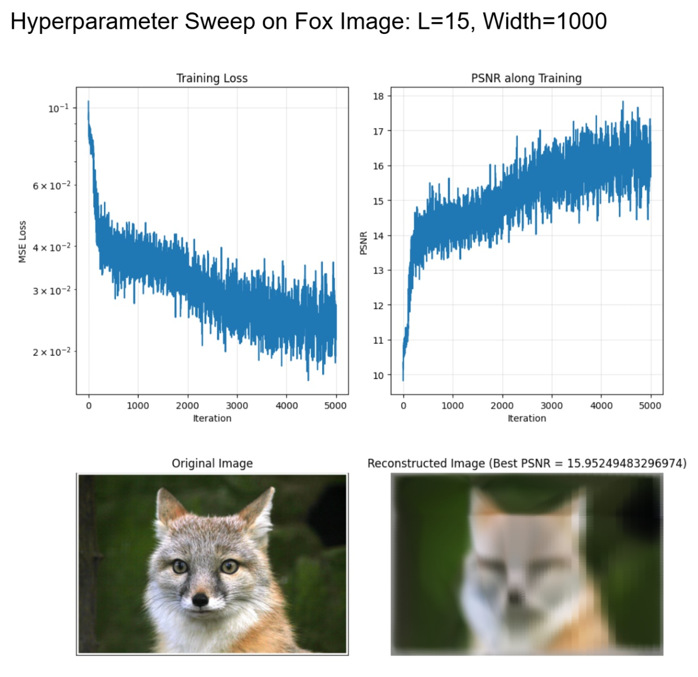
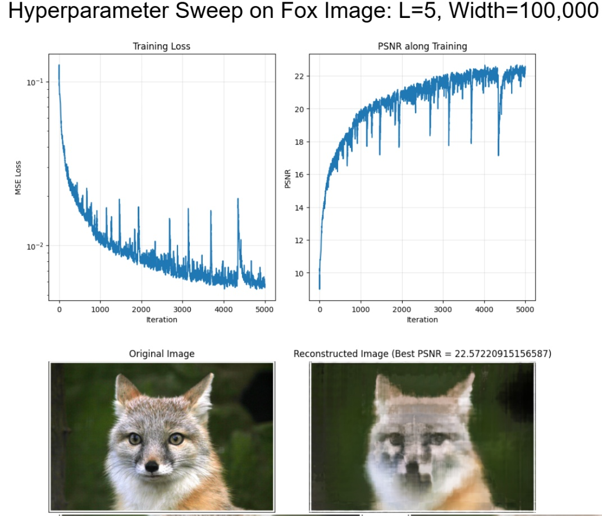
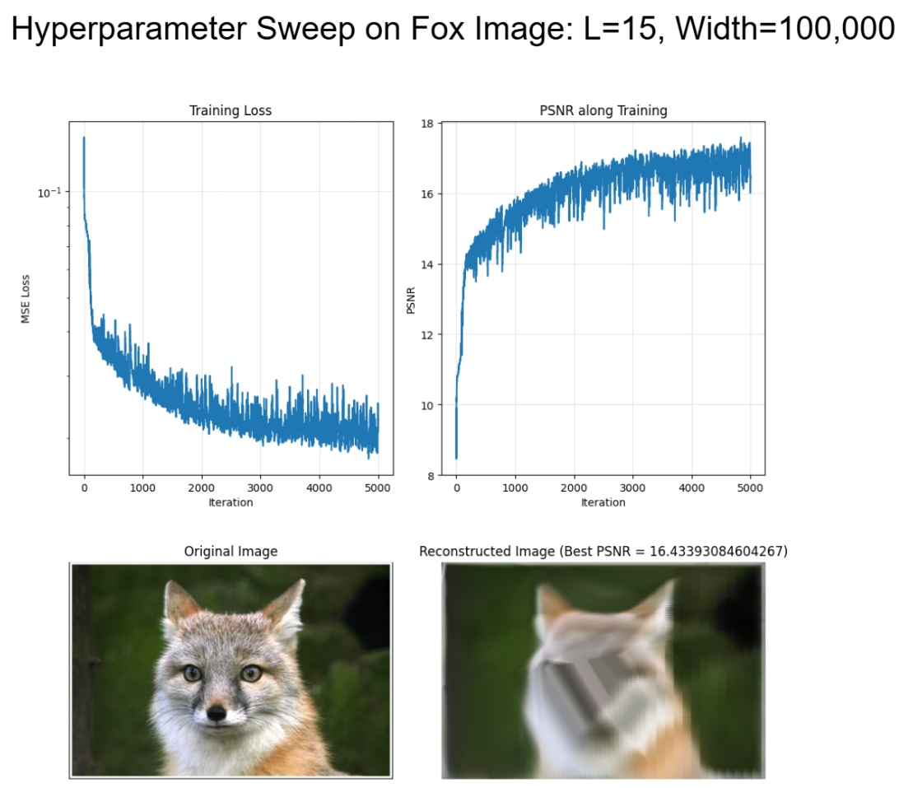
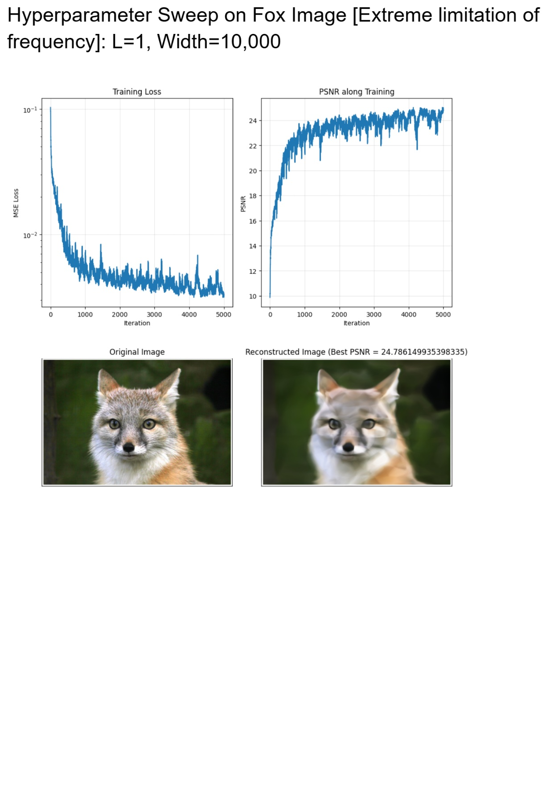

Author: Sammie Smith | Semester: Fall 2025
Running neural networks is computationally expensive, particularly when there's a lot of input data. An image with many pixels means that there will be many nodes in the first layer… and a lot more expensive convolutions to compute. To help with this problem, I made a dataloader that reduces image size by randomly sampling a batch of pixels. First, I read in images, then created a meshgrid-based normalized to [0,1] to sample coordinates from. I also normalized colors to [0,1] range so that I can use PSNR loss later in my training loop. Lastly, I wrote a sampling function that randomly samples N pixels from the image by randomly sampling 1) the coords from the meshgrid (then de-normalizing back to image coordinates) and 2) the corresponding colors. Below is a visualization of 100 random pixel samples from the fox image.

Figure 1: 100 randomly sampled pixels from the fox image
I used the same architecture as provided in the project specification.

Figure 2: Neural field network architecture
As training progresses, we slowly start to see the fox's facial features build up and loss diminish. This makes me think of how we learned about texture features in lecture. Both humans and neural networks compute statistics on textures to identify the subject. We do not see leg, eye, stripes, fangs, and think tiger! We just know that it looks like a tiger from the many tiger pictures we've seen before. This reminds me of that; you can see how layers of texture come together to see a fox.

Figure 3: Training progression showing fox reconstruction over iterations

Figure 4: Training progression on custom image

Figure 5: Final reconstruction of custom image

L=5, Width=1000

L=15, Width=1000

L=5, Width=100,000

L=15, Width=100,000

Figure 6: Best reconstruction with L=1, Width=10,000